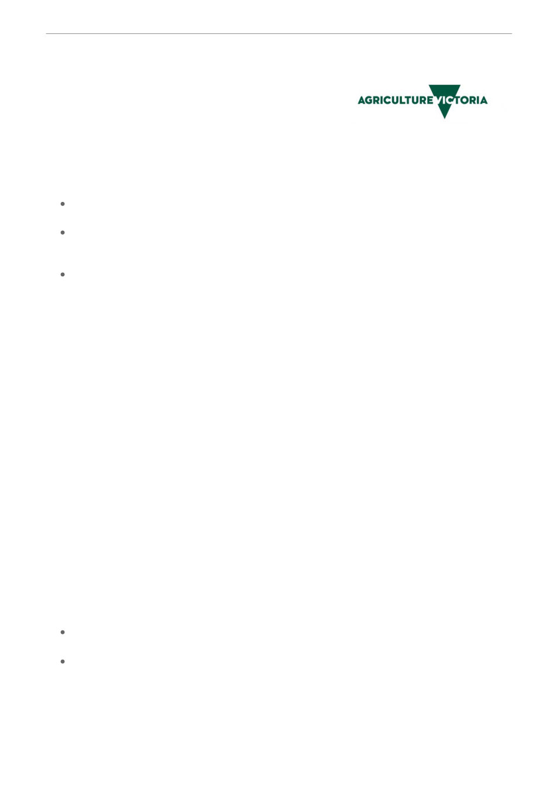

Agriculture Victoria
Republished from the 7 September Agriculture Victoria Update
BeeMAX improvements
An upgraded version of BeeMAX came into effect on 17 July
2026. The biggest improvement is the addition of a Chemical Treatment Recording function. This
function is accessible through the Diary tab on BeeMAX.
BeeMAX has had further software upgrades. These upgrades were requested from feedback
received by users. New features have been expanded to include:
Brands can be recycled. Email addresses can now be reused after a registration has been
cancelled
When entering “Mite Count” data the wording has changed to “Average Number of Mites
found per 300 bees” this makes the process clearer as multiple hives are being tested. This is
an average mite count across hives tested in apiary
Mapping capability improved
Other minor formatting changes may be noticed while using the BeeMAX program.
If you require any assistance with your BeeMAX account please contact the bee registration team at
beekeeper.registration@agriculture.vic.gov.au
Hive disposal and cancelling registration
Are you disposing of, selling or giving away your hives? In Victoria, beekeepers must notify the Bees
Registrar in writing within 7 days. Beekeepers can do this through their BeeMAX online diary.
Further information can be found at Beekeeper registration and hive disposal and Selling or giving
International bee imports - importing queen bees
While it is possible to import bee genetics from overseas, very strict biosecurity requirements
managed by the Department of Agriculture, Fisheries and Forestry (DAFF) are in place to protect
Australian beekeepers. These requirements reduce the risk of importing tracheal or tropilaelaps
mites, Deformed Wing Virus (DWV), and many other viruses that varroa mites can carry and spread
to bees. Live queen bees can only be sourced from approved countries and must undergo post-
entry quarantine procedures to protect local apiaries from exotic pests and diseases.
Further information on this is available through the Department of Agriculture, Fisheries and
To be released from quarantine into Victoria, a section 10 licence may be required. See: Importing
queen bees or semen from overseas.
Field Days
North East Apiarists’ Association field day is on at Swanpool on Sunday 4 October. Agriculture
Victoria will have a stall, presentation and be doing in hive demonstrations.
Bendigo Branch VAA Field day at Harcourt is approaching. Registrations are now open for the
field day on Sunday October 11.
Agriculture Victoria staff have a stall and will be presenting information and be doing in hive
demonstrations.
See Victorian Apiarists Association - News for further information.